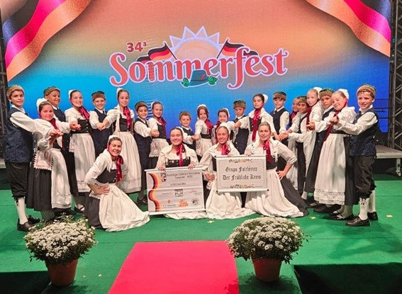

Domingos Martins
28 de maio de 2025

Domingos Martins é um município brasileiro no estado do Espírito Santo, Região Sudeste do país. Localiza-se na região sudoeste serrana do estado, a 42 km da capital capixaba, Vitória.
Leia mais...
Praia de Castelhanos - Anchieta
23 de maio de 2025

Uma praia do município que ser tornou muito famosa, até por ganhar a votação popular de praia mais bonita do sul do estado do Espírito Santo, foi a praia de Castelhanos. A praia conta com uma infraestrutura completa de bares, restaurantes, hotéis e pousadas.
Leia mais...
Sommerfest
19 de maio de 2025

A Sommerfest é um festival cultural da imigração alemã que celebra a história e a cultura dos colonos alemães que se estabeleceram na região. A festa inclui música, dança, gastronomia típica alemã, e claro, muito chopp.
Leia mais...